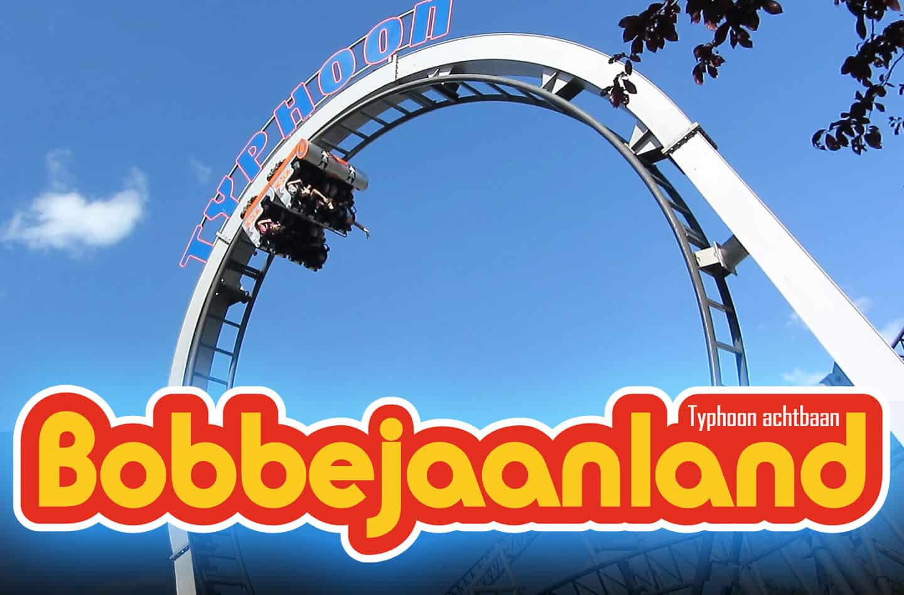
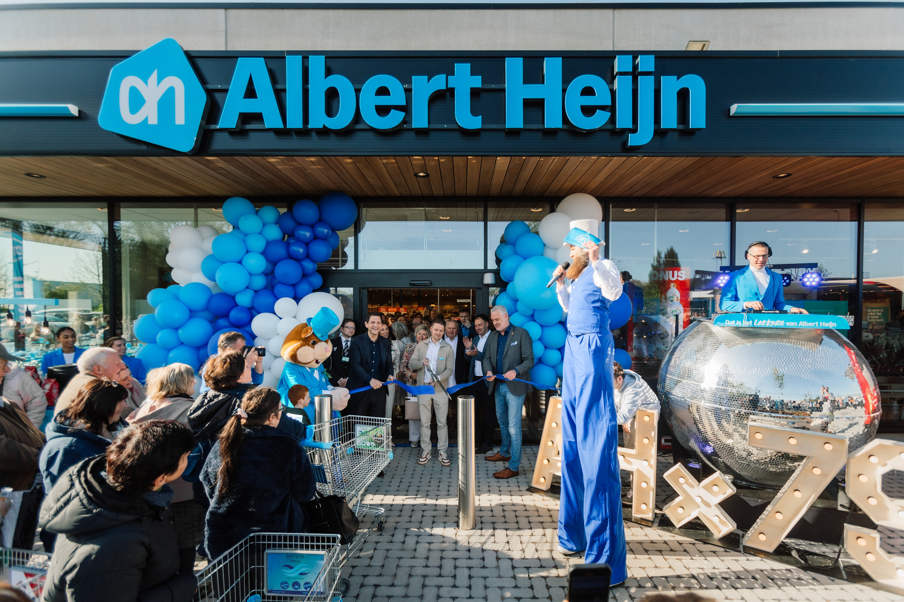
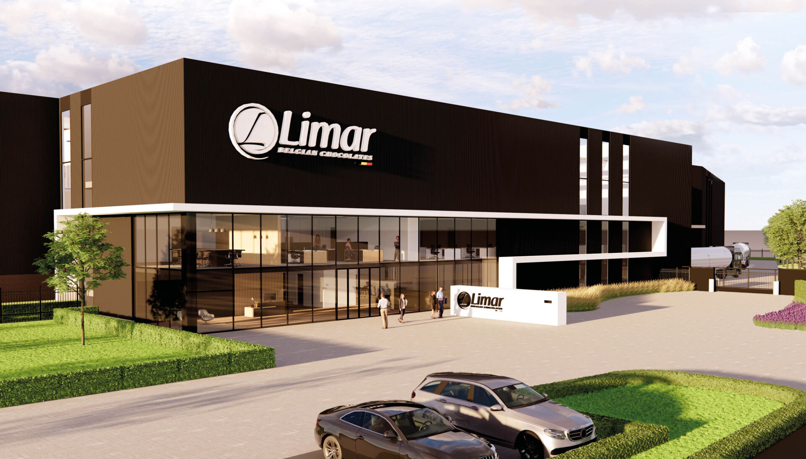

Studierichting
Van 2019 tot 2024 heb ik de opleiding Schrijnwerkerij gevolgd aan de school PT2O in Turnhout, waar ik mijn vakmanschap en technische vaardigheden heb ontwikkeld.
Sinds 2024 volg ik de opleiding Programmeren aan Hogeschool Thomas More, waar ik mij verder specialiseer in softwareontwikkeling en digitale technologieën.
Fiesta Europa
Mijn eerste job was ik 17 jaar. Ik heb bij Fiesta Europa gewerkt en mijn taken waren bier tappen en klanten bedienen. Ik vond het sollicitatiegesprek intimiderend omdat ik nog geen ervaring had en ik was ook een heel bescheiden persoon. De vaardigheden die ik heb opgenomen zijn positief. Meer zelfvertrouwen, leren omgaan met mensen en socialiseren met mensen op werk.

Bobbejaanland
Voor mijn tweede job heb ik bij Bobbejaanland gewerkt als schoonmaker. Ik moest zorgen dat de wc’s proper waren zodat de klanten naar een propere wc konden gaan. Ik had al snel geleerd dat dit toch niets voor mij was. Hier heb ik ook contact met mensen gehad en dat heeft gezorgd dat ik minder bescheiden werd.
Albert Heijn
Mijn derde job doe ik nu nog steeds. Ik ben namelijk vakkenvuller bij Albert Heijn in Turnhout. Wanneer ik daar was begonnen moest ik vakkenvullen en een jaar later heb ik de opleiding kassa gevolgd. De vaardigheden die ik heb opgenomen zijn positief. Klantvriendelijkheid en klanttevredenheid zijn heel belangrijk in deze sector. ‘Klant is koning’ zeggen ze meestal.
Limar
Mijn vierde job was ik 17 jaar. Ik heb bij Limar gewerkt. Het is een chocolaterie en wat ik moest doen was de chocolades in de juiste vorm en in de juiste dozen inpakken. Ik heb ook een paar keer bij de banden gestaan en daar moest ik de kwaliteit controleren van de chocolade en dozen stapelen. De vaardigheden die ik heb opgenomen zijn verantwoordelijkheid en teamwork.
Van Rooijen Logistiek / Van Genechten Biermans
Mijn vijfde job was ik 18 jaar en ben ik gestart bij Van Rooijen Logistiek. Het is een andere omgeving dan mijn vier eerste jobs. Het was een leuke ervaring. Ik heb nieuwe vrienden gemaakt en heb geleerd hoe je orders moet picken. Ook heb ik geleerd hoe ik met een elektrische transpalet moet rijden en bestellingen klaarmaken voor verzending. Ik heb nieuwe skills geleerd zoals orderpicken, rijden met elektrische transpalet, socialiseren met mensen, teamwork en communicatie. Mijn zesde job was ik 19/20. Ik heb gewerkt bij Van Genechten Biermans. Hier heb ik gebruik gemaakt van de skills die ik al geleerd heb bij mijn vorige job.